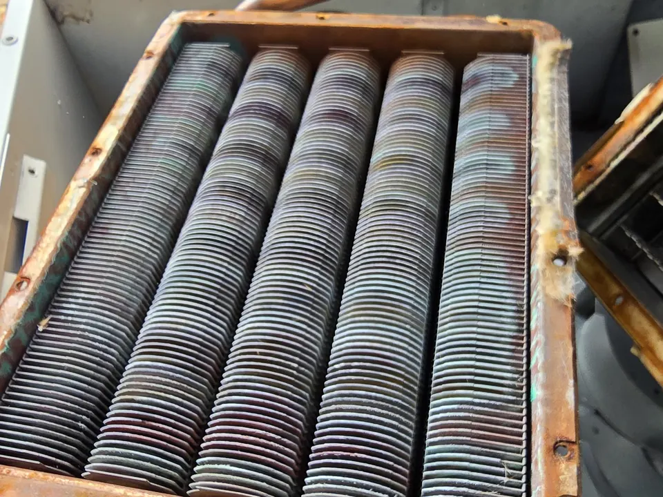
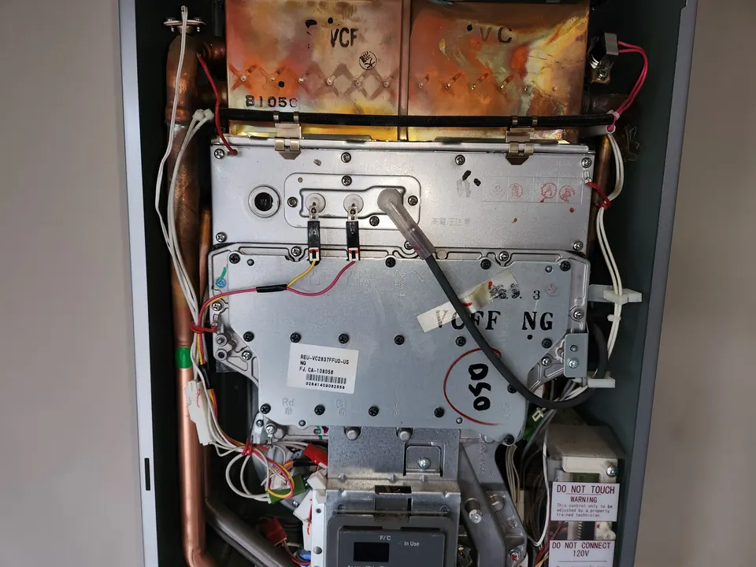

For many properties in Middle Tennessee, gas tankless water heaters are often one of the most dependable options for meeting daily hot water demands. They offer strong performance, fast recovery, and continuous hot water for homes and businesses that need consistent reliability.
Schedule Tankless Water Heater Service Today!
Why Choose a Tankless Water Heater?
Tankless water heaters heat water only when you need it, instead of storing hot water in a tank. That means improved efficiency, less standby energy loss, and a compact design that saves space.

Benefits of tankless water heaters include:
- Continuous hot water on demand
- Improved energy efficiency
- Space-saving wall-mounted design
- Longer lifespan than many traditional tank systems
- Reduced standby heat loss
- Reliable performance for residential and commercial properties
For homes and businesses looking to improve comfort and efficiency, a tankless system can be an excellent long-term investment.
Why Gas Tankless Water Heaters Are a Dependable Choice in Middle Tennessee
In many Middle Tennessee homes and businesses, gas tankless water heaters are a dependable choice because they can deliver strong, consistent hot water performance for higher-demand properties. They are especially well-suited for larger households, commercial spaces, and situations where multiple fixtures may be used at the same time.
Gas tankless systems are often preferred because they offer:
- Fast and efficient water heating
- Reliable hot water delivery for higher usage demands
- Strong performance for whole-home and commercial applications
- Energy-efficient operation
- Compact design and modern system controls
For many property owners in Murfreesboro and the surrounding area, a gas tankless system provides the balance of performance, dependability, and efficiency they need.
Tankless Water Heater Repair
If your tankless water heater is not delivering hot water consistently, showing error codes, or struggling to keep up with demand, Angle Stop Plumbing can help. We provide professional tankless water heater repair in Murfreesboro and Middle Tennessee, identifying the cause of the problem and restoring proper operation as quickly as possible.
Common tankless water heater issues include:
- No hot water
- Inconsistent water temperature
- Low hot water flow
- System error codes
- Ignition problems
- Mineral buildup affecting performance
- Units shutting down unexpectedly
Prompt service can help prevent bigger issues and extend the life of your system.
Tankless Water Heater Maintenance
Like any plumbing system, tankless water heaters perform best with regular maintenance. Routine service helps keep the unit operating efficiently and can reduce wear caused by mineral buildup and regular use.

Tankless water heater maintenance may include:
- System inspection
- Descaling and flushing
- Performance testing
- Cleaning filters and components
- Checking gas connections and venting
- Verifying safe and efficient operation
Regular maintenance is especially important in protecting long-term performance and helping your system continue to operate reliably.
Tankless Water Heater Installation
If you are considering upgrading from a traditional tank water heater, Angle Stop Plumbing provides expert tankless water heater installation for homes and businesses throughout Murfreesboro and Middle Tennessee. We help evaluate your hot water needs, property layout, and usage patterns to recommend the right system.
Our installation process includes:
- Assessing household or commercial hot water demand
- Recommending properly sized equipment
- Installing gas tankless water heater systems
- Ensuring proper connections and venting
- Testing system operation for dependable performance
A properly installed tankless system can provide years of efficient, consistent hot water.
Residential & Commercial Tankless Water Heater Service
Angle Stop Plumbing serves both residential and commercial customers with dependable tankless water heater services. Whether you are upgrading a home, replacing an outdated system in a business, or addressing issues with an existing tankless unit, we provide practical solutions designed around your hot water needs.
We work with property owners who need:
- Tankless water heater repair
- Tankless water heater maintenance
- Tankless water heater replacement
- New gas tankless water heater installation
- Dependable hot water solutions for homes and businesses
Why Choose Angle Stop Plumbing?
Customers throughout Murfreesboro and Middle Tennessee trust Angle Stop Plumbing for:
- Professional tankless water heater service
- Experience with residential and commercial systems
- Dependable installation and repair
- Honest recommendations based on property needs
- Responsive local service in Middle Tennessee
We understand that reliable hot water is essential, and we focus on solutions that are efficient, practical, and built to last.
Serving Murfreesboro & the Immediate Middle Tennessee Market
Angle Stop Plumbing proudly provides tankless water heater service, repair, and installation in Murfreesboro and across Middle Tennessee. If you are considering a gas tankless water heater for your home or business, or need service for an existing unit, our team is ready to help.
Schedule Tankless Water Heater Service with Angle Stop Plumbing
For trusted tankless water heater service in Murfreesboro and Middle Tennessee, turn to Angle Stop Plumbing. From repairs and maintenance to new system installation, we help property owners enjoy efficient, dependable hot water with solutions tailored to their needs.